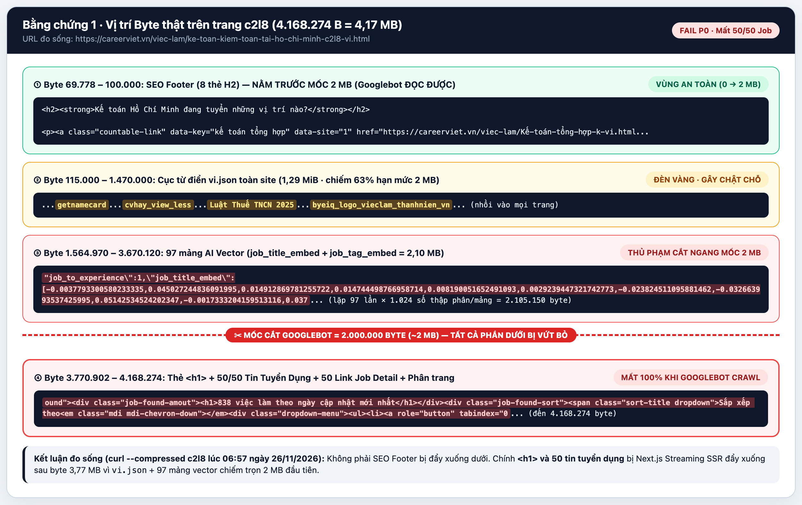
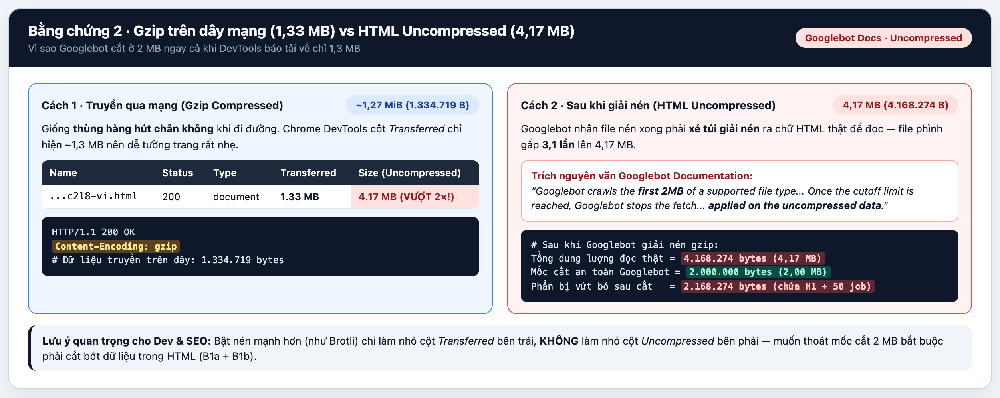
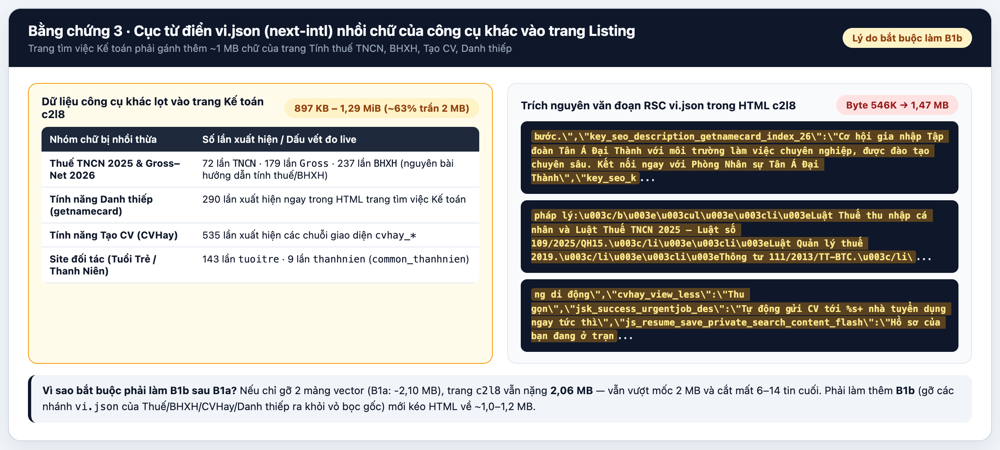
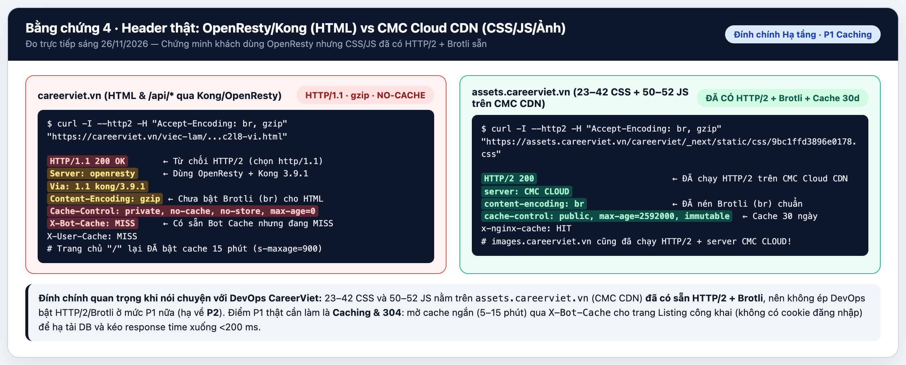
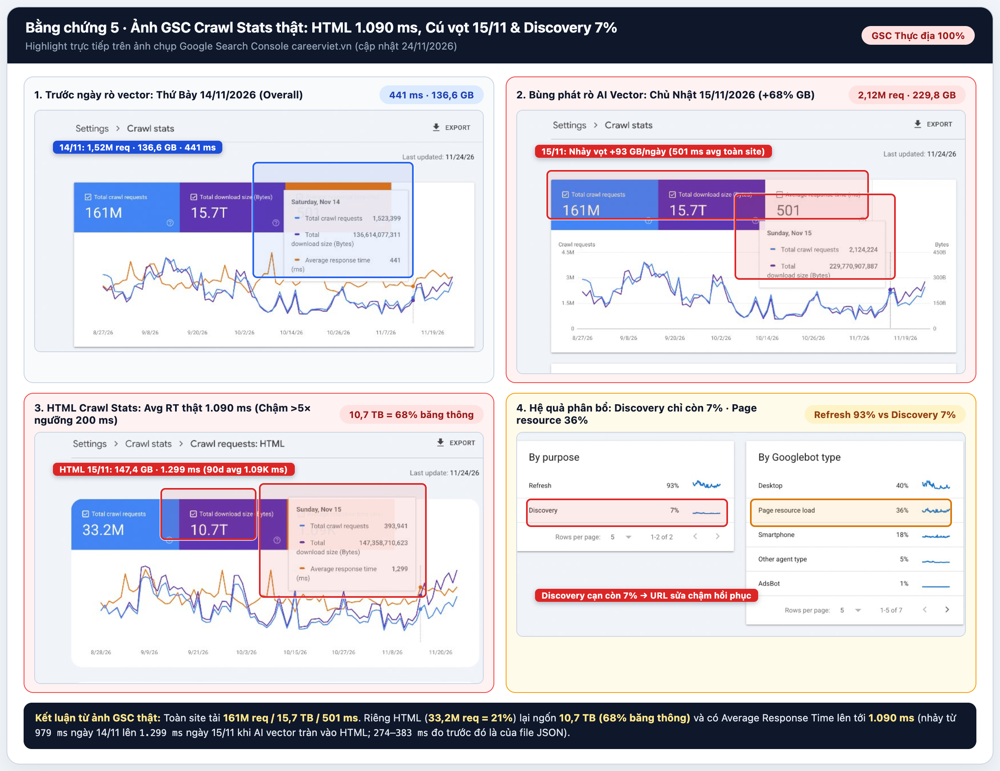
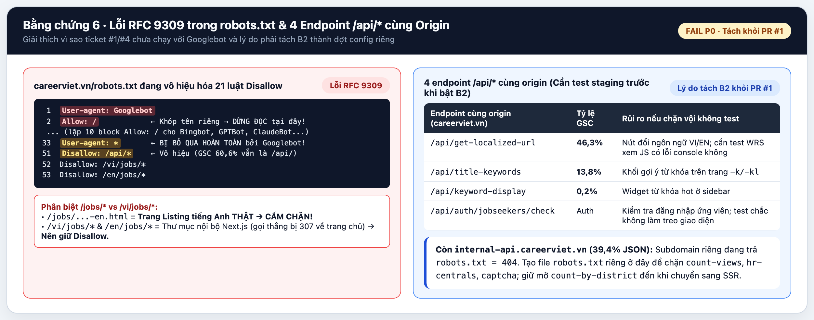
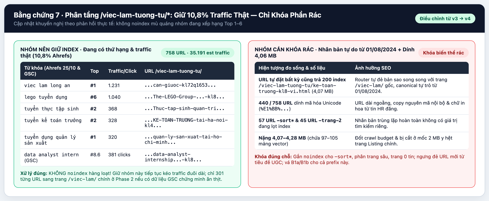
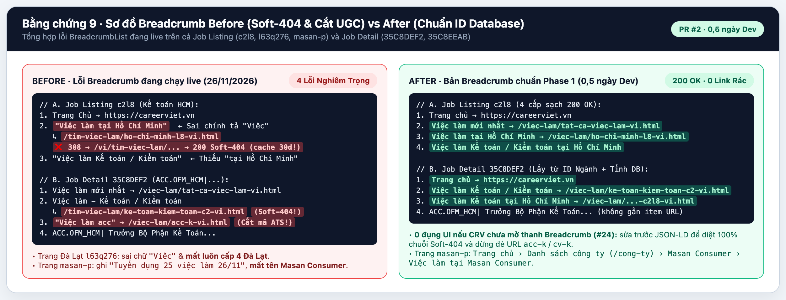

NOTE THẢO LUẬN TEAM & FINAL RECOMMENDATION (SAU CROSS-REVIEW 26/11/2026)
Hợp nhất đo sống 25–26/11 + Wayback Machine + Phản biện chéo 23 claim & 7 câu stress-test + Xác minh chuỗi Breadcrumb 308 → 200 Soft-404. Anh và team tick trực tiếp quyết định ngay dưới đây rồi bấm Chép biên bản chốt.
4 Thực tế Dữ liệu Bắt buộc Thống nhất (Chống lệch narrative với CRV)
- Lỗi >2 MB là sự cố mới tháng 11, không giải thích T8–T10: Wayback chứng minh trang ngành
c2nặng 1,50 MB (12/03) → 1,78 MB (05/10) → 2,00 MB (02/11) → 2,05–2,12 MB (12/11, chưa có vector) → 4,17 MB (26/11). Mảngjob_*_embedmới lọt vào khoảng 13–25/11/2026. Dùng mốc an toàn2.000.000 B. - Tách KPI Pageview hợp đồng khỏi đợt giảm click JL T11: Hợp đồng cam kết tăng trưởng Organic Pageview (60%) + Apply (40%), không cam kết ranking. Giai đoạn T5→T10: mục tiêu tháng tăng +77%, tổng pageview giảm nhẹ -2,4%, riêng Job Listing tăng +26,5%, phần giảm tập trung ở Non-JL (-13,1%).
- Đợt rớt click JL kỳ 30 ngày 23/10–21/11 KHÔNG do AIO: Click -29,8%, impression -36,9%, CTR tăng 6,15% → 6,85%. Nhóm mang dấu hiệu AIO (vị trí & imp giữ, CTR giảm ≥10%) chỉ có 55 URL (1,0% mức giảm ròng) — bỏ hoàn toàn claim "AIO tăng 5×". Kỳ đo trùng November Core Update (10–24/11) và ngay trước December Core Update (báo 24/11);
-kchiếm 46% tổng giảm và-lqmất 96%. - Tin hết hạn KHÔNG vi phạm guideline JobPosting: 9/9 mẫu cũ (2013–2026) trả
200 + follow, noindexvà 8/9 cóvalidThroughquá khứ — hợp lệ theo Google. Lý do xử lý là chi phí crawl (1,54–1,57 MB × ~17,39M URL bị loại).
Xác minh Mới Nhất (Đo sống + GSC Crawl Stats 26/11)
- Bắt trúng ngày vector bùng phát (
15/11/2026): Dữ liệu GSC Crawl Stats cho thấy dung lượng tải/ngày vọt 10× từ592 MB(14/11) →2,15 GB(15/11) →5,91 GB(22/11); chínhinternal-api(similar-jobs421 KB) cũng đang rò mảng*_embed. - Đính chính OpenResty/Kong vs CMC CDN: Toàn bộ CSS/JS (
assets.careerviet.vn) và ảnh đã bật sẵnHTTP/2 + Brotli + Cache 30dtrên CMC Cloud. Chỉcareerviet.vn(Kong/OpenResty) cònHTTP/1.1 + gzip + no-cache(dù đã có sẵnX-Bot-Cache) → hạ HTTP/2 & Brotli về P2, giữ Caching/304 ở P1. - GSC 966 URL JSON:
28%JSON >21%HTML; có 4 endpoint/api/*cùng origin (60,6%, dẫn đầu làget-localized-url46,3% vàtitle-keywords13,8%) +39,4%trêninternal-api.careerviet.vn(chưa córobots.txt). - Điều chỉnh
/viec-lam-tuong-tu/*: Nhóm này đang kéo10,8%tổng traffic Ahrefs (758 URL, nhiều từ Top 1–2) → giữ index trang có hạng, chỉ khóa phần rác (-sort*, phân trang sâu, 0 tin).
0.1. Bảng 6 Quyết định Cần Chốt trong Buổi Họp Team (Tick & Ghi chú trực tiếp)
Lưu tự động trên trình duyệt| # | Điểm cần chốt | Phương án Đề xuất (Recommended) | Điều cần xác nhận / Lưu ý CRV | Quyết định & Ghi chú họp |
|---|---|---|---|---|
| 1 | PR #1 chỉ làm B1 Khẩn cấp |
PR #1 = B1a (bỏ job_*_embed từ cả backend internal-api lẫn Next.js, trong ngày) + B1b (gỡ namespace route khác khỏi root i18n provider, 1–1,5 ngày; an toàn hơn pick() 3 nhánh). DoD: 0 chuỗi embed + link job cuối < byte 1.500.000 + CI gate. Tách B2 (robots.txt) & B3 (<h1>) ra; chạy song song B7 DevOps (ưu tiên Caching/X-Bot-Cache P1; HTTP/2 + Brotli P2). |
Dev CRV grep repo xác nhận chunk tải động không dùng *_embed; test staging đủ 4 endpoint /api/ cùng origin trước khi bật B2. |
|
| 2 | Company 3 loại A / B / C Kiến trúc URL |
Loại A (1 emp_id: Masan, Vietravel, Intertek, Concentrix, Sabeco) → canonical -p, 301 -k về -p.Loại B (đa emp_id: Vingroup, Vietcombank, BIDV, FPT, Pepsi, Đại Dũng, Vinmec, Hoa Sen) → giữ -k đang có click + chuyển sang whitelist emp_id.Loại C (<50% tin chính chủ) → bỏ template Company. (Hoãn -g sang Phase 2.) |
Team phân loại đủ 48 URL Company của sprint; thống nhất bỏ đề xuất ép mọi -p → -k và bỏ hẳn GSC Removals. |
|
| 3 | Vòng đời Tin hết hạn 2 pha Chi phí Crawl |
Pha 1 (X ngày): giữ 200 + noindex + validThrough quá khứ + khối việc tương tự cho user.Pha 2 (sau X ngày): trả 410 Gone (quét cả tồn kho 2013–2025 để rút khỏi crawl queue).Ngoại lệ: URL có backlink hoặc click thì 301 về trang -p của DN. |
Hỏi CRV tin gia hạn có giữ nguyên ID không (chọn X > chu kỳ gia hạn) + đọc lại spec ticket #8 ("Rule Jobs expired"). |
|
| 4 | Khoanh dừng Sprint 24/11 Chặn lãng phí |
Mức tối thiểu — Dừng ngay 13 URL sai đích: 4 URL -sort (canonical về URL gốc) + 9 brand -k Loại C (5 URL ngay Tuần 1: vinfast-k, unilever-k, shopee-k, siemens-k, grab-k; 4 URL còn lại: nam-a-bank-k, aeon-k, panasonic-k, truong-quoc-te-k).Mức rộng: rà lại cả 97/192 URL -k/-kl/-sort trước Tuần 2–3. |
Chọn phương án dừng 13 URL tối thiểu ngay lập tức hay tạm dừng toàn bộ cụm 97 URL? | |
| 5 | Data Gate & Pilot Content 0 ngày Dev |
Gom ngưỡng gate về 1 bảng duy nhất; xuất JSON cho từng URL có khối gates (n_total, n_clean, n_salary_public, n_companies, n_jd_sampled, n_districts) + script QA fail nếu HTML in khối tắt. Pilot 10–20 trang → đo trùng lặp (EmbeddingGemma + token riêng ≥30–40%) trước khi chạy 60 URL/tuần. |
Chốt người chạy script trích JSON từ JD; bổ sung O6b, O9, O14 và bỏ dải word-count cứng theo Tier để khớp SOP tier-1-outline-am.md. |
|
| 6 | Backlog #1/#4 & Quyền Preview Governance |
Mở lại ticket #1, #4 trong backlog tracking (robots.txt ghi Done 07/07 nhưng chưa áp cho Googlebot từ 02/03). Bỏ làm mới CollectionPage + ItemList; PR #2 ưu tiên JobPosting tin sống + BreadcrumbList 308 → Soft-404 (đồng thuận vụ ticket #24). Chốt giữ hay gỡ/private link preview sau khi họp xong. |
Giao owner có quyền GSC CareerViet chạy đủ 4 phép kiểm GSC + xin CRV deploy log 15/09–25/11. |
0.2. Final Recommendation — Trụ 1: Lộ trình Kỹ thuật gửi Dev CRV (Map Ticket Backlog)
Tách PR để hotfix 2 MB không bị kẹt vòng duyệt cũ| Đợt triển khai | Hạng mục & Map Backlog | Lý do chọn / Lưu ý kỹ thuật | Tiêu chí Nghiệm thu (DoD) |
|---|---|---|---|
| PR #1 (Khẩn cấp) Chỉ B1 · 2 bước |
B1a (trong ngày): Bỏ job_title_embed, job_tag_embed ngay tại API backend internal-api & tầng data fetch Next.js.B1b (1–1,5 ngày): Gỡ namespace của route khác khỏi root i18n provider ( 919 KB), nạp lại tại layout của route đó. |
Tách khỏi B2/B3 để lên live ngay. Chỉ làm B1a mới đưa c2l8 về ~2,06 MB (còn cắt 6–14 link cuối), nên bắt buộc nối tiếp B1b. |
Đo byte offset trên 8 template: 0 chuỗi job_*_embed; link job cuối nằm trước byte 1.500.000; gắn size check vào CI. |
| DevOps Song song B7 · P1 Cache · P2 H2/Br |
P1 Caching: Bật cache ngắn 5–15 phút qua X-Bot-Cache cho trang Listing công khai (không cookie đăng nhập).P2 Bổ trợ: Bật HTTP/2 + Brotli trên Kong/OpenResty (CMC CDN cho CSS/JS đã bật sẵn). |
HTML careerviet.vn đang trả no-cache, no-store và 304 < 1% trong GSC. Trang chủ / đã chạy s-maxage=900. |
X-Bot-Cache: HIT (chỉ khách ẩn danh) + GSC Avg RT giảm <200 ms; không cache session người dùng. |
| Config Độc lập B2 · Ticket #1, #4 |
Vá robots.txt RFC 9309 trên careerviet.vn (xóa 10 khối Allow: / đầu file) + tạo robots.txt riêng cho internal-api.careerviet.vn chặn count-views, hr-centrals, captcha; gắn X-Robots-Tag: noindex, nofollow. |
GSC xác nhận Googlebot đốt 28% crawl cho JSON (46,3% vào get-localized-url; 13,8% vào title-keywords). Cần test staging đủ 4 endpoint /api/* cùng origin trước khi chặn. |
Staging render 100% không lỗi console/navigation; Googlebot Robots Tester pass; 0 Blocked Resources trong URL Inspection. |
| PR #2 (Index & JobPosting) #19, #22, #10, #6, #24, #23 |
1. JobPosting tin mở (ưu tiên #1 của PR #2): fix employmentType hết lồng ngoặc kép, bỏ baseSalary chữ/LTT/LCT.2. BreadcrumbList (#24, #23): sửa /tim-viec-lam/* (308 → 200 Soft-404) về /viec-lam/*.3. Index Pollution & Canonical (B5 · #10, #6): Phân tầng /viec-lam-tuong-tu/* (giữ index trang đang có hạng/traffic; chỉ khóa rác -sort*, phân trang sâu, 0 tin), bỏ -sort* khỏi hreflang/link, khóa canonical_slug theo emp_id.4. Onpage (B3 · #19, #22 & B4): fix <h1>, typo, tắt auto-linker trong .seo-content. |
Sửa trực tiếp lỗi đang hỏng điều kiện hiện Google Jobs; khóa nguồn phình index pollution ~17,39M URL. Tuyệt đối cấm dùng GSC Removals cho canonicalization. | Rich Results Test PASS 10 mẫu tin mở; /tim-viec-lam/* biến mất khỏi JSON-LD; /viec-lam-tuong-tu/* trả noindex, follow; slug bịa -p{ID} trả canonical chuẩn từ DB. |
| Bỏ / Hoãn Phase 2+ Tiết kiệm Dev |
Bỏ gói làm mới CollectionPage + ItemList trên Listing. Hoãn đổi Job Card <h2>→<h3> (P2 Opportunistic), hoãn Group Hub -g, bỏ code chip động ATF (chuyển sang Làn A CMS). |
Tiết kiệm 2,5–3 ngày Dev cho Schema không có rich result Jobs và 4–8 tuần Dev cho chip ATF để dồn toàn lực vào B1 + JobPosting + Index Pollution. | — |
Trụ 2A · Company 3 Loại & Recall -k/-kl
- Company 3 loại: A (1
emp_id) →-p; B (đaemp_id) → giữ-k+ whitelistemp_id; C (<50% tin chính chủ: 9 trang) → bỏ template Company. - Recall
-k/-kl: Không dùngexclude_titlelàm đòn chính. Đổi cách đếm<title>/<h1>chỉ tính tin khớp tiêu đề (n_exact), tách tin mở rộng vector xuống khối "Việc làm liên quan". - Cổng dữ liệu:
0 tin → noindex/404ngay; giữ ân hạn 60 ngày cho URL có click 90 ngày; tìm ngưỡng min-data thật từ phân phối 3.688 URL-k+ áp QDP Gate ≥3/4.
Trụ 2B & 3 · Tin Hết hạn & Sprint 24/11
- Tin hết hạn 2 pha: Pha 1 (
Xngày > chu kỳ gia hạn ID) giữ200 + noindex + validThroughquá khứ + việc tương tự → Pha 2 trả410 Gone; ngoại lệ có backlink/click301về-p. - Sprint 24/11: Dừng ngay tối thiểu 13 URL sai đích (4
-sort+ 9 brand-kLoại C, 5 URL ngay Tuần 1) và rà phần còn lại trong 97 URL-k/-kl/-sort. - 4 Outline AM v2.1: Gom ngưỡng Data Gate về 1 bảng; xuất JSON có khối
gates+ QA fail khi in khối tắt; pilot 10–20 trang đo trùng lặp (≥30–40% unique) + lịch refresh bảng tĩnh 7–21 ngày.
Trụ 4 · Mạch Báo cáo Khách hàng CRV
- Đổi thứ tự lập luận (TR-01 → TR-05 trước, AIO sau): KPI hợp đồng là Pageview (mục tiêu +77%, JL tăng +26,5%, giảm nằm ở Non-JL -13,1%).
- Đợt giảm click JL 23/10–21/11: Imp giảm mạnh hơn click, CTR tăng → không phải AIO. Trùng November Core Update (10–24/11) & trước December Core Update (báo 24/11).
- Chưa kết luận nguyên nhân gốc cho khách trước khi hoàn tất 5 phép kiểm GSC & deploy log CRV ở mục 0.3 bên dưới.
0.3. 5 Phép kiểm GSC & CRV Bắt buộc (Tick theo tiến độ thực thi)
Đã có GSC Crawl Stats (26/11) · Còn 4 phép kiểm cần hoàn tấtVector job_*_embed lọt vào từ 15/11 (GSC vọt 10× lên 5,91 GB/ngày), đẩy H1 và 50/50 job xuống byte 3,77–4,17 MB.
10 khối Allow: / vô hiệu hóa Disallow: /api/*; 4 endpoint /api/ cùng origin chiếm 60,6% JSON crawl (internal-api 39,4%).
CMC CDN (CSS/JS) đã có HTTP/2 + Brotli; HTML trên OpenResty/Kong còn no-cache (304 <1%). /viec-lam-tuong-tu/ giữ hạng, chỉ khóa rác.
""FULL_TIME"" & LTT/LCT hỏng Google Jobs tin sống; Breadcrumb 308 → Soft-404; 9 brand -k Loại C + 4 -sort cần dừng gấp.
1.1. Bằng chứng Byte-Offset trên c2l8 (4,17 MB): Thứ bị Googlebot cắt thực sự là gì?
Đọc nhanh cho người làm SEO: Khối SEO Footer nằm ngay đầu file (byte 69.778) nên Googlebot vẫn đọc được. Thứ bị đẩy xuống tận đáy file (byte 3,77–4,17 MB) và bị Googlebot cắt bỏ hoàn toàn là nội dung chính: thẻ <h1>, toàn bộ 50/50 tin tuyển dụng và 50 link trỏ vào Job Detail. Lý do: vì Next.js dùng cơ chế gửi từng phần (Streaming SSR ), máy chủ lỡ đổ hai khối dữ liệu nặng là từ điển vi.json (1,29 MiB) và 97 mảng AI Vectors (2,10 MB) ra trước, lấp kín toàn bộ mốc cắt an toàn 2.000.000 byte (~2 MB) trước khi kịp gửi <h1> và 50 job.
Mốc thời gian đã kiểm chứng: Wayback trang c2 tăng từ 1,50 MB (12/03) → 1,78 MB (05/10) → 2,00 MB (02/11) → 2,05–2,12 MB (12/11, mất 6–14 link cuối) → 4,17 MB (từ ngày 15/11/2026 khi vector AI lọt vào HTML). Lỗi này cần hotfix gấp nhưng KHÔNG phải nguyên nhân giảm KPI từ T8–T10.
1.2. Phân rã dung lượng HTML uncompressed trên 8 trang Listing & Job Detail
HTML uncompressed nghĩa là gì? Khi đi qua mạng, server nén file HTML bằng Gzip nên Chrome báo tải về chỉ khoảng 1,33 MB. Nhưng Googlebot mở file nén ra để đọc chữ (gọi là uncompressed) thì file phình lên 4,17 MB — và tài liệu Googlebot quy định mốc cắt 2 MB tính trên file sau khi đã giải nén.
Khung HTML giao diện thật (H1, 50 thẻ job, footer). Phần này vốn rất nhẹ và sạch.
97 chuỗi tọa độ job_*_embed (1.024 số/mảng) bị rò xuống HTML. Không có trên trang Profile.
Từ điển tiếng Việt của các tool khác (Thuế TNCN, BHXH, CVHay, Danh thiếp) bị nhồi vào mọi trang.
Dữ liệu kỹ thuật mặc định của Next.js để trình duyệt chạy nút bấm và bộ lọc sau khi tải trang.
1.2b. Bằng chứng GSC Crawl Stats (966 mẫu JSON) & Kho 9 Ảnh Minh họa Đo sống
HTML 21% vs JSON 28% · Tải tăng 10× đúng ngày 15/11Dữ liệu Crawl Stats thật từ Google Search Console xác nhận Googlebot đang lãng phí 28% lượt crawl cho file JSON (nhiều hơn cả 21% HTML), tỷ lệ 304 Not Modified dưới 1%, và dung lượng tải mỗi ngày vọt gấp 10 lần từ 593 MB (14/11) lên 5,91 GB/ngày từ mốc 15/11/2026. Bấm vào từng ảnh dưới đây để phóng to hoặc chép link gửi trực tiếp cho Dev.

H1 & 50 job sau mốc 2 MB

1,33 MB mạng → 4,17 MB đọc

Nhồi Thuế/CVHay vào Listing

CSS/JS đã HTTP/2 + br sẵn

JSON 28% & cú vọt 5,91 GB

Lý do tách B2 khỏi PR #1

Giữ 10,8% traffic · khóa rác

Mã ATS HR tự điền + 2 lớp UGC

Soft-404 308 & Cấp 3 cắt UGC
1.3. Scorecard Cost of Retrieval (TA = Historical Data × Topical Coverage / Cost of Retrieval)
Chuẩn hóa theo Wiki CoR · Technical Advance · Runbook TR-04Mọi nút thắt dưới đây cùng quy về chi phí máy tìm kiếm phải bỏ ra để tải, giải nén, render, hiểu thực thể và quyết định giữ index cho CareerViet.
| Tiêu chí Cost of Retrieval (bấm ⓘ để giải thích) | Chuẩn Wiki / Google | Số đo live trên careerviet.vn | Trạng thái | Hành động ưu tiên | Khả thi & Rủi ro sang trang khác |
|---|
1.4. Rà soát Đợt Audit T11 & Sprint 24/11: 5 Điểm Đúng · 4 Điểm Cần Chặn Gấp · 8 Lỗ Hổng Mở rộng
Bối cảnh tổng thể trước đợt triển khai 180 URL| Nhóm Intent | Tổng URL | Biến động Click 30 ngày (%) | Phân bổ Sprint (192 URL) | Chẩn đoán tổng hợp (Đã Cross-Review) |
|---|
5 điểm Audit T11 đã bắt đúng
- Bắt chuẩn lỗi mất thực thể trong
<h1>trên Location, Industry và-cXlY. - Bắt đúng lỗi biến
{updated_month}in"tháng tháng"và tooltip sapo giữ số tin cũ. - Phát hiện trúng lỗi auto-linker chém đôi
[việc làm quận 1]0và bắn link Unicode có dấu. - Chỉ ra link silo quận/huyện trỏ nhầm vào URL
-khoặc URLsortthay vì-lq. - Nhận ra bài SEO cũ 2.400–4.000 chữ quá dài và sai lệch với trang 2–18 tin.
4 điểm cần chặn ngay trước khi tiếp tục Sprint
- Điểm chặn #1 (từ Doc team) — Canonical
-p → -kđại trà: Sai cho DN đơnemp_id(Loại A) và nguy hiểm cho 9 brand-kLoại C có <50% tin chính chủ (4 trang 0 tin). Phải chia 3 loại A/B/C. - Điểm chặn #2 (từ Doc team) — Dùng GSC Removals dọn sort/trùng: Google quy định rõ "Don't use the URL removal tool for canonicalization" (chỉ ẩn tạm 6 tháng, không gom PageRank).
- Điểm chặn #3 (Sprint 24/11 đang chạy) — 13 URL sai đích chắc chắn: Gồm 4 URL
-sort(canonical về URL gốc) và 9 URL brand-kLoại C (5 URL ở Tuần 1:vinfast-k,unilever-k,shopee-k,siemens-k,grab-k) + cần pilot 10–20 trang trước khi scale 60 URL/tuần. - Điểm chặn #4 — Vá HTML > 2 MB (PR #1) & tắt auto-linker: Bỏ vector + tách namespace i18n để giải cứu
<h1>và 50 job link, đồng thời tắt hẳn auto-linker bên trong.seo-content.
8 lỗ hổng cần bổ sung vào Audit
- Payload HTML 3,92–4,17 MB (từ 15/11) cắt sạch
<h1>và 50/50 job; JSON crawl vọt lên5,91 GB/ngày. - Lỗi RFC 9309 trên
robots.txtvô hiệu hóa 21 luật Disallow (khiến28%crawl GSC đổ vào JSON). careerviet.vntrảno-cache, no-store(304 <1%; đã có sẵnX-Bot-Cache); riêng CSS/JS trên CMC CDN đã có HTTP/2 + Brotli./viec-lam-tuong-tu/*(mởindex, followtừ 01/08/2024) giữ10,8%traffic thật nhưng nhân bản rác-sort*/Unicode và dính 4,06 MB.- Lỗi vô hạn slug trên
-p{ID}& mất bài SEO khi đổi tên DN. - Nhiễu recall trên
-k/-kl(seo-kchỉ 6/50 đúng tiêu đề;zzqqxxyy-...-k0 tin vẫn trả 200index, follow). - 16.559 Job Detail UGC (
employmentType/baseSalarytin mở, Breadcrumb308 → 200 Soft-404,/en/search-job/). - Bối cảnh Google Core Update (TR-02: Nov Core 10–24/11, Dec Core báo 24/11) &
-lqmất 96% (box quậnl8tải JS).
2.1. Giải thích dễ hiểu: HTML > 2 MB · AI Vector · File vi.json (Feedback #1)
Bắt buộc sửa trước khi scale 180 URLHTML uncompressed > 2 MB là gì?
Giống gửi thùng hàng ép chân không: đi trên mạng nén Gzip chỉ nặng 1,33 MB, nhưng Googlebot nhận xong phải xé túi giải nén để đọc chữ thì phình ra 4,17 MB.
Tài liệu Googlebot ghi "first 2MB" trên dữ liệu giải nén (mốc an toàn 2.000.000 byte). Trên c2l8, toàn bộ <h1> và 50 job bị đẩy sang byte 3,77–4,17 MB từ 15/11/2026.
Next.js truyền mảng AI vector là gì?
Để làm AI Matching trên server, mỗi tin có 2 dãy tọa độ job_title_embed và job_tag_embed gồm 1.024 số thập phân/mảng (~21,7 KB).
Code lấy nguyên cục đẩy xuống Client → Next.js phải in 97 mảng (2,10 MB) vào giữa HTML, đẩy 50 job thật ra tận byte 3,77 MB (và làm JSON GSC vọt 10×)!
Dump file vi.json là gì?
Toàn bộ từ điển câu chữ của cả hệ thống (tạo danh thiếp 290 key, CVHay 535 key, Tuổi Trẻ/Thanh Niên, bài Thuế TNCN 2025, BHXH, Gross-Net) bị gói thành 1,29 MiB.
Layout gốc đang bê nguyên cục 1,29 MiB này nhồi vào mọi trang Listing lẫn Job Detail, đốt hết 63% hạn mức 2 MB ngay từ đầu trang.
Nguồn tài liệu chính thức (đã kiểm chứng HTTP 200)
| Tài liệu gốc | Quy định nguyên văn | Link gốc |
|---|---|---|
| Googlebot Docs | "Googlebot crawls the first 2MB of a supported file type... Once the cutoff limit is reached, Googlebot stops the fetch... applied on the uncompressed data." | developers.google.com/.../googlebot ↗ |
| Google Crawler Overview | Phân biệt trần chung 15 MB của hạ tầng vs trần riêng 2 MB của Googlebot Search. | .../overview-google-crawlers ↗ |
| Next.js Data Security | Server Component truyền props xuống Client sẽ serialize vào HTML; bắt buộc lọc qua DTO tối giản. | nextjs.org/.../data-security ↗ |
| next-intl Docs | Không đổ toàn bộ messages vào NextIntlClientProvider; dùng pick() theo từng route. | next-intl.dev/.../server-client ↗ |
Bước B1a (PR #1 · làm trong ngày) — Bỏ 2 mảng AI Vector (-2,10 MB HTML & hết spike JSON 5,9 GB)
export async function fetchListingJobs(params) {
const res = await internalJobService.search(params);
return {
...res,
data: (res?.data ?? []).map(({ job_title_embed, job_tag_embed, ...safeJob }) => safeJob),
};
}Bước B1b (PR #1 · 1–1,5 ngày) — Tách phần vi.json của công cụ khác ra khỏi vỏ bọc chung
Vì sao bắt buộc phải làm thêm B1b? Nếu chỉ làm B1a, trang c2l8 mới giảm từ 4,17 MB xuống 2,06 MB — vẫn vượt trần 2,00 MB của Googlebot và bị mất 6–14 tin tuyển dụng cuối trang. B1b gỡ chữ của trang Thuế TNCN, BHXH, Tạo CV, Danh thiếp khỏi layout gốc để mỗi công cụ tự nạp ở layout riêng, kéo trang Listing về ~1,0–1,2 MB.
import { NextIntlClientProvider } from 'next-intl';
import { getMessages } from 'next-intl/server';
import omit from 'lodash/omit';
const HEAVY_ROUTE_ONLY_NAMESPACES = [
'getnamecard',
'cvhay',
'common_tuoitre',
'common_thanhnien',
'taxCalculator',
'socialInsurance',
'grossToNet',
];
export default async function LocaleLayout({ children, params }) {
const allMessages = await getMessages();
const safeSharedMessages = omit(allMessages, HEAVY_ROUTE_ONLY_NAMESPACES);
return (
<NextIntlClientProvider locale={params.locale} messages={safeSharedMessages}>
{children}
</NextIntlClientProvider>
);
}2.2. Giải mã /api/* & /jobs/* qua GSC (966 mẫu) — Vì sao PHẢI TÁCH B2 KHỎI PR #1?
Đúng như suy luận SSR: 50 job trên Job Listing và nội dung JD đã được máy chủ ghép sẵn vào HTML, nên Googlebot không cần gọi /api/ để đọc 50 job. Tuy nhiên, dữ liệu GSC Crawl Stats cho thấy Googlebot vẫn đang đốt 28% lượt crawl cho file JSON (60,6% trên careerviet.vn/api/* + 39,4% trên internal-api.careerviet.vn).
| Luồng dữ liệu trên CareerViet | Cơ chế thật & số đo GSC (966 mẫu JSON) | Khuyến nghị xử lý |
|---|---|---|
| 50 job Listing & toàn bộ JD Job Detail | 100% SSR: Ghép sẵn vào HTML + Schema JobPosting trước khi trả về. | An toàn 100% — Không bị ảnh hưởng khi chặn /api/*. |
/jobs/* (tiếng Anh) vs /vi/jobs/*, /en/jobs/* | Phân biệt rõ: /jobs/...-en.html là trang Listing tiếng Anh THẬT; còn /vi/jobs/* & /en/jobs/* là đường dẫn rewrite nội bộ (gọi thẳng bị 307 về trang chủ). | CẤM chặn /jobs/*; chỉ giữ Disallow: /vi/jobs/* và /en/jobs/*. |
internal-api.careerviet.vn (39,4% JSON crawl) | Subdomain riêng đang trả robots.txt = 404. Gồm count-by-district (23,4%), similar-jobs (4,0%, rò 421 KB vector), count-views (3,7%). | Tạo robots.txt riêng chặn count-views, hr-centrals, captcha; chưa chặn count-by-district khi còn tải JS client. |
4 endpoint /api/* cùng origin (60,6% JSON crawl) | Gồm 4 API: /api/get-localized-url (46,3% JSON crawl — tạo link đổi ngôn ngữ VI/EN dù HTML đã có hreflang), /api/title-keywords (13,8% — từ khóa gợi ý), /api/keyword-display (0,2% — widget sidebar), /api/auth/jobseekers/check. | PHẢI TÁCH B2 KHỎI PR #1! Xem giải thích 3 lý do ngay bên dưới. |
Giải thích đơn giản: "PHẢI TÁCH B2 KHỎI PR #1!" nghĩa là gì?
- PR #1 là bản sửa code khẩn cấp (chỉ B1a + B1b) để giảm HTML từ 4,17 MB xuống <1,5 MB trong 1–2 ngày. B2 là việc sửa file
robots.txtđể kích hoạtDisallow: /api/*(hiện đang bị vô hiệu bởi 10 dòngAllow: /ở đầu file). - Vì sao phải tách riêng 2 đợt? Vì từ tháng 3/2026 tới nay Googlebot chưa bao giờ bị chặn
/api/*. Nếu sửarobots.txtngay trong PR #1, lần đầu tiên trình duyệt Googlebot (WRS) sẽ bị chặn cả 4 endpoint trên — nếu chẳng may chặn nhầm endpoint khiến JS vỡ giao diện hoặc Dev đòi test kỹ toàn site, bản cứu hỏa 2 MB (PR #1) sẽ bị kẹt theo. - Trình tự an toàn: Đẩy PR #1 (B1a + B1b) lên trước → Mở lại ticket
#1, #4để test B2 trên staging đủ cả 4 endpoint cùng origin → Chặn thẳng/api/get-localized-url(46,3%) + gắnX-Robots-Tag: noindex, nofollowrồi kiểm URL Inspection → Page Resources trên GSC.
Cấu hình X-Robots-Tag trong next.config.js (Chặn Google Search index URL JSON nhưng vẫn cho render UI)
Gắn header HTTP này cho mọi route /api/:path* để bất kỳ endpoint nào cần mở Allow cho Googlebot đọc lúc render giao diện đều không bao giờ lọt vào chỉ mục tìm kiếm.
async headers() {
return [
{
source: '/api/:path*',
headers: [{ key: 'X-Robots-Tag', value: 'noindex, nofollow' }],
},
];
}2.3. Cơ chế lỗi RFC 9309 trên robots.txt & Bản sửa Trước / Sau
Google Robots.txt Spec ↗Ví dụ Bảng Nội Quy Tòa Nhà: Dưới User-agent: *, bảo vệ cấm vào 21 phòng kỹ thuật (/counter/*, /vi/tim-ung-vien/*, /vi/jobs/*...). Nhưng dòng 1–20 ở đầu bảng lại dán 10 tấm biển VIP ghi đích danh Googlebot, Bingbot, GPTBot, ClaudeBot... kèm Allow: /. Theo RFC 9309 §2.2.1, mỗi bot chỉ chọn duy nhất 1 nhóm khớp tên mình nhất và KHÔNG cộng gộp với * — nên cả 10 con bot vứt sạch toàn bộ 21 luật Disallow!
Live hiện tại (56 dòng — vô hiệu hóa 21 Disallow)
User-agent: Googlebot
Allow: /
User-agent: Bingbot
Allow: /
User-agent: YandexBot
Allow: /
User-agent: Baiduspider
Allow: /
User-agent: facebookexternalhit
Allow: /
User-agent: GPTBot
Allow: /
User-agent: Google-Extended
Allow: /
User-agent: FaceBot
Allow: /
User-agent: FacebookBot
Allow: /
User-agent: ClaudeBot
Allow: /
User-agent: CCBot
Disallow: /
User-agent: Amazonbot
Disallow: /
User-agent: Bytespider
Disallow: /
User-agent: Diffbot
Disallow: /
User-agent: ia_archiver
Disallow: /
User-agent: YouBot
Disallow: /
User-agent: *
Disallow: /qckiemviec/
Disallow: /vi/jobseekers/jobs/save
Disallow: /en/jobseekers/jobs/save
Disallow: /counter/*
Disallow: /en/jobseekers/jobs/print?id=*
Disallow: /vi/jobseekers/jobs/print?id=*
Disallow: /check-matching
Disallow: /detail-matching
Disallow: /jobseekers/check-apply-job?lst_id=*
Disallow: /jobseekers/check-save-job?lst_id=*
Disallow: /vi/jobseekers/jobs/exportjobpdf*
Disallow: /vi/employers/popup/resumeinfo*
Disallow: /en/employers/popup/resumeinfo*
Disallow: /en/resume-search/*
Disallow: /vi/tim-ung-vien/*
Disallow: /en/jobseekers/jobs/logapplyoutsite*
Disallow: /vi/jobseekers/jobs/logapplyoutsite*
Disallow: /api/*
Disallow: /vi/jobs/*
Disallow: /en/jobs/*
Disallow: *talentcommunity/detail/*
Sitemap: https://careerviet.vn/sitemap/sitemap.xmlBản đề xuất sửa chuẩn RFC 9309
# Giữ nguyên 6 bot scraper đang chặn hoàn toàn
User-agent: CCBot
User-agent: Amazonbot
User-agent: Bytespider
User-agent: Diffbot
User-agent: ia_archiver
User-agent: YouBot
Disallow: /
# Áp dụng cho TẤT CẢ bot tìm kiếm & AI được phép (Googlebot, Bingbot, GPTBot, ClaudeBot...)
# Xóa 10 khối "Allow: /" thừa ở đầu để các bot này tuân thủ đủ 21 luật Disallow bên dưới
User-agent: *
Disallow: /qckiemviec/
Disallow: /vi/jobseekers/jobs/save
Disallow: /en/jobseekers/jobs/save
Disallow: /counter/*
Disallow: /en/jobseekers/jobs/print?id=*
Disallow: /vi/jobseekers/jobs/print?id=*
Disallow: /check-matching
Disallow: /detail-matching
Disallow: /jobseekers/check-apply-job?lst_id=*
Disallow: /jobseekers/check-save-job?lst_id=*
Disallow: /vi/jobseekers/jobs/exportjobpdf*
Disallow: /vi/employers/popup/resumeinfo*
Disallow: /en/employers/popup/resumeinfo*
Disallow: /en/resume-search/*
Disallow: /vi/tim-ung-vien/*
Disallow: /en/jobseekers/jobs/logapplyoutsite*
Disallow: /vi/jobseekers/jobs/logapplyoutsite*
# CẦN TEST STAGING TRƯỚC KHI ÁP DỤNG (4 endpoint /api/ cùng origin trong GSC + Chrome):
# Mở tạm các endpoint cần thiết cho UI render (tốt nhất chuyển sang SSR ở Phase 2):
Allow: /api/keyword-display
Allow: /api/title-keywords
# Mục tiêu chính là CHẶN /api/get-localized-url (đốt 46,3% JSON crawl!) & /api/trace-log:
Disallow: /api/*
# Thư mục nội bộ Next.js App Router (chỉ chặn /vi/jobs/* & /en/jobs/* — TUYỆT ĐỐI KHÔNG chặn /jobs/* tiếng Anh)
Disallow: /vi/jobs/*
Disallow: /en/jobs/*
Disallow: *talentcommunity/detail/*
Sitemap: https://careerviet.vn/sitemap/sitemap.xml
# --- FILE MỚI CHO SUBDOMAIN internal-api.careerviet.vn/robots.txt (đang 404) ---
# User-agent: *
# Disallow: /api/v1/js/jsk/jobs/count-views
# Disallow: /api/v1/jss/emp/resumes/hr-centrals
# Disallow: /api/v1/pcs/captcha/
# Disallow: /api/v1/jss/jsk/apply-jobs/getactiveprivacypolicy
# (Chưa chặn count-by-district & similar-jobs khi còn tải CSR)3.1. Ma trận Khả thi Kỹ thuật 3 Làn (Xác nhận chuyển Chip ATF Ảnh 2 vào Content CMS)
0 ngày Dev cho Làn A · dồn toàn lực Dev cho Làn BXác nhận trực giác về Chip ATF (MISA (380 tin), P. Sài Gòn / Q.1 cũ): Để code chip động riêng theo từng template cần 4–8 tuần xuyên Data/NLP + Aggregation Index + quản trị crawl budget — trong khi Google không yêu cầu phải đặt dạng chip đầu trang. Đưa đúng thuộc tính đó vào bảng/danh sách HTML SSR cuối bài CMS (Làn A) tốn 0 ngày Dev và giữ trọn 85–90% Information Gain.
Làn A · Content / CMS (0 ngày Dev)
- Đưa bảng tần suất công cụ JD, tra cứu phường 1/7/2025, Local Salary Delta, bảng phân tầng DN, lộ trình 3 nấc vào bài SEO HTML tĩnh.
- Dựng khối 4 nhóm link nội bộ sạch ngay trong bài CMS.
- Viết FAQ 35–45 từ answer-first bằng HTML thường.
- Dọn CTA ReactJS trên
masan-p, bỏ ảnh Hero 2 dòng chữ, chuyển ngành rộng về-c/-cXlY.
Làn B · Low-Dev Global (0,5–3 ngày/PR)
- PR #1 (Chỉ B1 — khẩn cấp): B1a bỏ
job_*_embedtừ backendinternal-api& Next.js + B1b gỡ namespace route khác khỏi root i18n provider. DoD: link job cuối < byte 1.500.000 + CI gate. - DevOps song song (B7): P1 Caching: bật
X-Bot-Cache5–15 phút cho Listing công khai · P2: bậtHTTP/2+Brotlitrên Kong/OpenResty (CMC CDN đã có sẵn). - Config riêng (B2 — Ticket #1, #4): Vá
robots.txtRFC 9309 (test đủ 4 endpoint/api/cùng origin) + thêminternal-api.careerviet.vn/robots.txt. - PR #2 · JobPosting sống & Breadcrumb (#24, #23): Vá
employmentType/baseSalarytin đang mở + sửaBreadcrumbList/tim-viec-lam/*(308 → 200 Soft-404). Bỏ làm mớiItemListListing. - PR #2 · Index Pollution & Canonical (B5 — Ticket #10, #6): Phân tầng
/viec-lam-tuong-tu/*(giữ trang có hạng, khóa rác-sort*/0 tin), bỏ-sort*khỏihreflang, khóacanonical_slugtheoemp_id. - PR #2 · Onpage (B3 — #19, #22 & B4): Fix
<h1>+ typo + tắt auto-linker trong.seo-content; tách đếmn_exactcho-k.
Làn C · High-Dev / Dời Phase 2+
- Chip lọc kỹ năng/phường động ở ATF theo từng template (chuyển sang Làn A).
- Biểu đồ JS Dumbbell & bảng lọc đa tiêu chí đáy trang (chuyển sang Làn A).
- Đổi Job Card
<h2>→<h3>+ bọc<article>/<aside>(hạ P2 Opportunistic). - Đập lại toàn bộ Global Router Unicode/Pagination SSR/CSR
.box-job-type(làm sau khi Làn B có số tăng trưởng).
3.2. Workaround Canonical (Hyosung) & Chống nhiễu Recall -k/-kl
Google Canonical Docs ↗- Bằng chứng test live
-p35A57472(26/11/2026): URL bịatest-slug-bat-ky-p35A57472-vi.htmlvẫn trả 200 OK, echo nguyên vàocanonical& đẻhreflangảo! Đau hơn: chỉ slug cũhyosung-p35A57472có 12<h2>SEO; 2 slug mớihyosung-corp&hyosung-hs-hyosungmất sạch bài SEO vì CMS đang bind theo slug thay vìemp_id. - 3 bẫy nếu dùng CMS Canonical + Batch 301: (1)
canonicalchỉ là hint — nếuhreflangvẫn tự trỏ alias thì Google sẽ bỏ qua; (2) Chỉ chữa được URL đã biết; (3) Nộp 301 dễ tạo chuỗiA → B → Cnếu không giữ Master Map 1-hop. - 1-Step-Better Low-Dev Ask (~1–2 ngày, 0 redirect): Đã sửa dòng xuất canonical thì đổi thẳng sang đọc
company.canonical_slugtrong DB cho cảcanonical+hreflang, và bind bài SEO theoemp_id. Vẫn giữ Batch 301 định kỳ cho cặp-k(sale-admin↔sales-admin, Unicode). - Chống nhiễu Recall
-k/-kl& Company 3 loại (đã chỉnh sau Cross-Review): Không dùngexclude_titlelàm đòn chính (tránh làm mỏng trang); thay bằng đếm<title>/<h1>theon_exactvà đẩy tin mở rộng vector xuống khối riêng "Việc làm liên quan" (chỉ dùngexclude_titlecho ~100 từ khóa đầu). Khóa cổng0 tin → noindex/404và áp QDP Gate ≥3/4 + Company chia 3 loại: A (1 ID) →-p· B (đa ID) → giữ-k+ whitelistemp_id· C (<50% tin chính chủ) → bỏ template Company.
3.3. Phán quyết Job Card <h2> → <h3>: ROI vs Rủi ro
Hạ xuống P2 / Opportunistic- Google nói thẳng (SEO Starter Guide ↗): "...from Google Search perspective, it doesn't matter if you're using them [headings] out of order."
- John Mueller (09/2024): "If you have an existing site, fixing this isn't going to change your site's rankings."
- Đối thủ VN đo live (26/11/2026): CareerLink.vn (top rank mạnh) cũng đang dùng 60+
<h2>cho từng job card (Vieclam24h dùng<h3>; 123job dùng<a>/<p>; VietnamWorks không dùng H2/H3 SSR). - Rủi ro thật bên CSS CareerViet: Quét 23 file CSS live thấy
8a90fffd98e09479.csskhóa 6 selector trực tiếp vào tagh2(.title.is-red h2 a...). Đổi vội dễ vỡ màu/tracking. - Kết luận: Chủ động nhượng bộ
<h2>→<h3>ở Phase 1 để dồn toàn lực ép sửa<h1>(chỉ sửa 1 chuỗi text, 0% rủi ro CSS, tác động thẳng Relevance & Title Link).
3.4. Bản đồ tự ăn thịt URL (Self-Cannibalization) trên 4 nhóm trang
3.5. Tài liệu Tham khảo 6 Mẫu JSON-LD (Phase 1 chỉ vá Breadcrumb 308 & JobPosting tin mở)
Bỏ gói ItemList ở Phase 1 (ROI thấp) · Tham khảo cấu trúcJobPosting chỉ đặt ở Job Detail (Google JobPosting ↗); Google đã dừng FAQ rich result từ 07/05/2026 và xóa doc ngày 15/06/2026 (Search Updates ↗). Khuyến nghị sau Cross-Review: KHÔNG đầu tư 2,5–3 ngày Dev làm mới CollectionPage + ItemList trên Listing (Google Carousel không hỗ trợ Job; lợi ích AI mới là giả thuyết). Phase 1 chỉ tập trung (1) sửa lỗi JobPosting trên tin đang mở và (2) sửa BreadcrumbList đang trỏ /tim-viec-lam/* (308 → 200 Soft-404) — lưu ý ticket #24 CRV từng từ chối breadcrumb giao diện nên cần đồng thuận trước. 6 mẫu JSON bên dưới giữ lại làm chuẩn tham khảo lâu dài.
Schema Job Listing thực tế: BEFORE (Đo sống 26/11 trên c2l8) vs AFTER (Sửa gọn Phase 1)
{
"@context": "https://schema.org",
"@type": "BreadcrumbList",
"itemListElement": [
{ "@type": "ListItem", "position": 1, "name": "Trang Chủ", "item": "https://careerviet.vn" },
{
"@type": "ListItem", "position": 2,
"name": "Viêc làm tại Hồ Chí Minh", // ❌ Sai chính tả "Viêc" thiếu dấu nặng
"item": "https://careerviet.vn/tim-viec-lam/ho-chi-minh-l8-vi.html" // ❌ 308 → 200 Soft-404 (cache 30d!)
},
{ "@type": "ListItem", "position": 3, "name": "Việc làm Kế toán / Kiểm toán" } // ❌ Thiếu tỉnh & cấp hub
]
}
{
"@context": "https://schema.org",
"@type": "BreadcrumbList",
"itemListElement": [
{ "@type": "ListItem", "position": 1, "name": "Trang chủ", "item": "https://careerviet.vn" },
{ "@type": "ListItem", "position": 2, "name": "Việc làm mới nhất", "item": "https://careerviet.vn/viec-lam/tat-ca-viec-lam-vi.html" },
{
"@type": "ListItem", "position": 3,
"name": "Việc làm tại Hồ Chí Minh", // ✅ Đúng chính tả
"item": "https://careerviet.vn/viec-lam/ho-chi-minh-l8-vi.html" // ✅ Đổi /tim-viec-lam/ → /viec-lam/ (200 OK)
},
{ "@type": "ListItem", "position": 4, "name": "Việc làm Kế toán / Kiểm toán tại Hồ Chí Minh" }
]
}
"Viêc làm tại Lâm Đồng" và mất luôn cấp 4 Đà Lạt; trang Masan (masan-p ↗) ghi "Tuyển dụng 25 việc làm 26/11/2026" và mất hẳn tên công ty Masan Consumer. Bấm nút xanh ở trên để xem đủ 5 mẫu Before/After.
6 Mẫu JSON-LD mở rộng (Tài liệu tham khảo cấu trúc cho Phase 2)
4.1. Audit Trang Job Detail (UGC Content) — Đo sống 27 Tin mở + 3 Tin hết hạn + 16.559 Sitemap
Sửa 1 Global Template vá toàn bộ 16.559+ tin6 điểm CareerViet đang làm ĐÚNG (tránh sửa nhầm)
- HTML 1,51–1,59 MB (dưới mốc 2 MB; 0 KB
*_embed; Schema nằm trong 100 KB đầu). - Thân JD đã SSR đủ trong
<main>(Googlebot không cần chạy JS). directApply: trueĐÚNG chuẩn: Guest Apply 1 bước trả 200 OK.JobPosting.descriptiongiữ HTML sạch (<p>,<ul>,<li>).- Tin hết hạn đã gỡ khỏi XML Sitemap và bật
noindex. - Chặn tốt thẻ
<a href>spam do HR chèn vào thân JD.
7 lỗi Technical & Schema do Code (100% Dev kiểm soát)
- Schema
JobPostinglỗi 100%:"[""FULL_TIME""]"(27/27),baseSalary.value: "Cạnh tranh"+ mã tiền tệ nội bộLTT/LCT(60%), gắn saiapplicantLocationRequirementslên việc tại văn phòng (100%), đảoaddressRegion/Locality, HTML Word bẩn (95%). - Breadcrumb Cấp 2 Soft-404 & Cấp 3 đẻ rác: Cấp 2 trỏ
/tim-viec-lam/...(308 → Soft-404); Cấp 3 cắt từ title UGC đẻ raacc-k,cv-k(3,93 MB),intergrated-...-k. - 16.559 URL
/en/search-job/xung đột: Nộp trongjob_en_*.xmlnhưng trang EN canonical về VI và mấthreflang="en-vn"tự tham chiếu + cron sitemap chưa atomic. - Tin xóa & chi phí crawl tin hết hạn: ID sai
307vềtat-ca-viec-lam(4,05 MB Soft-404). Đính chính: 9/9 tin hết hạn đang cónoindex+validThroughquá khứ là ĐÚNG tài liệu Google (không vi phạm guideline), nhưng vẫn đốt 1,54–1,57 MB/trang trên ~17,39M URL bị loại → đề xuất vòng đời 2 pha sang410vì chi phí crawl. - Lộ staging
images.qccrv.dev/regulations.pdfở footer mọi trang,lương Lương:(100% tin có lương), 0 link việc tương tự SSR trong<main>.
Bảng đo thực tế 8 tin mở sâu + 3 tin hết hạn (26/11/2026)
| Mẫu kiểm tra | URL rút gọn | HTTP / Robots | HTML (DOM) | baseSalary | employmentType | Lỗi phát hiện |
|---|
4.2. Xử lý UGC theo First Principle 2 Lớp (KHÔNG sửa chữ HR thấy)
Vì sao không tự ý gọt/xóa chữ trên giao diện? Các mã như ACC.OFM_HCM|, 128535 - hay [Bình Phước] đều do HR khách hàng B2B tự điền (hoặc đẩy từ phần mềm ATS nội bộ) để quản lý hồ sơ. Sửa chữ hiển thị sẽ khiến khách khiếu nại. Giải pháp đúng là tách đôi 2 lớp:
| Lớp hiển thị / Dữ liệu | Ai đọc? | Cách xử lý chuẩn | Ví dụ thật (tin Kế toán ở Bình Phước) |
|---|---|---|---|
Lớp 1 · <h1> & Thân bài JD | HR & Ứng viên | GIỮ NGUYÊN 100% chữ HR đăng (không tự cắt/sửa). | [Bình Phước] ACC.OFM_HCM| KẾ TOÁN TỔNG HỢP |
Lớp 2a · HTML <title> | Google Search thường | CÓ ghi tỉnh & tên công ty (gọt mã ATS/ALL CAPS bằng Regex) để khớp tìm kiếm & tăng CTR. | Tuyển Kế toán tổng hợp tại Bình Phước - Công ty ABC | CareerViet |
Lớp 2b · Schema JobPosting.title | Hộp Google for Jobs | CHỈ ghi đúng tên chức danh. Google cấm nhồi mã ATS, tỉnh, lương, tên công ty vào trường này (đã có jobLocation & hiringOrganization riêng). | "title": "Kế toán tổng hợp" |
| Lớp 2c · Tin đa tỉnh (5–10 tỉnh) | Google for Jobs + Web | KHÔNG noindex tin khác tỉnh (sẽ mất luôn Google Jobs tỉnh đó!). Chuẩn Google & TopCV: dùng 1 URL + mảng jobLocation[] nhiều tỉnh (sửa bug tin OLAS HCM+HN). Chỉ noindex tin spam trùng cùng 1 tỉnh hoặc <100 từ. | "jobLocation": [ {Bình Phước}, {Bình Thuận} ] |
5 URL sống bấm kiểm chứng trực tiếp mã ATS & lỗi UGC (đo 26/11/2026):
| Loại mã HR tự điền | Tiêu đề live & Link bấm trực tiếp | Hệ lụy kỹ thuật phát sinh |
|---|---|---|
| Mã phòng ban ATS | ACC.OFM_HCM| Trưởng Bộ Phận Kế Toán Miền nam (35C8DEF2) ↗ | Breadcrumb Cấp 3 tự cắt thành /viec-lam/acc-k-vi.html ↗ |
| Mã phiếu tuyển ATS | 128535 - Sales Manager - Steel (35C868C8) ↗ | Dính mã 128535 - vào JobPosting.title |
| Đa tỉnh LPBank #1 | [Bình Phước] CV/CVC Thu hồi nợ muộn (35C8EEAB) ↗ | Breadcrumb Cấp 3 đẻ rác /viec-lam/cv-k-vi.html ↗ |
| Đa tỉnh LPBank #2 | [Bình Thuận] CV/CVC Thu hồi nợ muộn (35C8EEAC) ↗ | Trùng 99,84% với 35C8EEAB; nên tư vấn dùng 1 tin + mảng jobLocation[] |
| Gõ sai chính tả | Intergrated Business Planning Senior Manager (35C8DB28) ↗ | Đẻ trang search sai chính tả /viec-lam/intergrated-...-k-vi.html |
4.3. Chiến lược phân tầng /viec-lam-tuong-tu/*: Giữ 10,8% traffic đang có hạng — Chỉ khóa phần rác
Giải thích "nhân bản mọi -k/-kl từ 01/08/2024": Đây không phải lỗi mới tháng 11. Router của CareerViet cho phép lấy bất kỳ từ khóa nào gắn sau /viec-lam-tuong-tu/ đều sinh ra trang 200 OK, index, follow song song với /viec-lam/ (đã tồn tại từ 01/08/2024; dung lượng 4,06–4,10 MB hiện nay là do dính chung lỗi rò AI vector từ 15/11).
Số liệu thật (Ahrefs 25/10, top 5.000 keyword): Nhóm này có 758 URL đang xếp hạng, kéo 35.191 traffic/tháng (10,8%) — nhiều từ đứng Top 1–2 (viec lam long an #1, tuyển kế toán trưởng #2, quản lý sản xuất #1). Tuy nhiên trong 758 URL lại lẫn 440 URL Unicode xấu, 57 URL -sort* và 45 URL -trang-2.
3 bước xử lý thực dụng (không làm mất traffic đang có):
- Bước 1 — KHÔNG
noindexhàng loạt: Giữ nguyênindex, followcho các URL/viec-lam-tuong-tu/đang có thứ hạng và click ổn định (và vá B1a/B1b để chúng tụt xuống dưới 1,5 MB). - Bước 2 — Chỉ khóa phần rác không có giá trị SEO: Gắn
noindex, followcho mọi URL chứa-sort*, phân trang-trang-2+, trang0tin, và khóa cơ chế tự sinh URL mới từ tiêu đề tin đăng có mã nội bộ / ALL CAPS. - Bước 3 — Phase 2 xử lý ăn thịt (theo số GSC): Với từ khóa chủ lực đang bị
/viec-lam-tuong-tu/giành hạng của trang/viec-lam/chính (như trang vừa viết bài ở sprint), mới301từng ca cụ thể sang trang/viec-lam/chuẩn.
4.2b. Chuẩn hóa employmentType (8 giá trị Google Jobs) & Before/After Schema JobPosting
Ưu tiên #1 của PR #2 · Sửa lỗi 100% tin đang mở
{
"@type": "JobPosting",
"title": "Nhân Viên Sales Admin - Trung tâm Mice miền Bắc",
"employmentType": [""FULL_TIME""], // ❌ Lồng dấu " do stringify thừa 1 lần
"baseSalary": { "currency": "LCT", "value": { "value": "Cạnh tranh" } }, // ❌ Lộ mã nội bộ LCT & chữ thay số
"educationRequirements": { "credentialCategory": "no requirements" }, // ❌ JD ghi Đại học nhưng xuất "no req"
"applicantLocationRequirements": { "@type": "Country", "name": "Việt Nam" } // ❌ Cấm đặt cho việc tại văn phòng
}
{
"@type": "JobPosting",
"title": "Nhân viên Sales Admin", // ✅ Chỉ giữ đúng chức danh (lọc mã ATS/địa điểm)
"employmentType": ["FULL_TIME"], // ✅ Mảng chuỗi sạch (hoặc "FULL_TIME"), 0 dấu " thừa
// ✅ Bỏ hẳn khối baseSalary khi HR chọn "Cạnh tranh" / LCT / LTT (giao diện vẫn hiện bình thường)
"jobLocation": [ { "@type": "Place", "address": { "addressRegion": "Hà Nội", "addressCountry": "VN" } } ]
// ✅ Nếu tin tuyển nhiều tỉnh: xuất mảng [Place 1, Place 2...]; chỉ thêm applicantLocationRequirements khi 100% Remote
}
Bảng 8 giá trị employmentType duy nhất Google Jobs công nhận (bắt buộc IN HOA tiếng Anh):
| Hình thức HR chọn trên form CareerViet | Giá trị chuẩn employmentType | Giải thích ngắn |
|---|---|---|
| Nhân viên chính thức / Toàn thời gian | "FULL_TIME" | Phổ biến nhất trên CareerViet |
| Bán thời gian | "PART_TIME" | Làm việc bán thời gian / theo ca ngắn |
| Thời vụ / Nghề tự do / Freelance / CTV | "CONTRACTOR" | Hợp đồng dịch vụ / cộng tác viên |
| Tạm thời / Thời vụ ngắn hạn | "TEMPORARY" | Hợp đồng có thời hạn ngắn rõ ràng |
| Thực tập / Thực tập sinh | "INTERN" | Vị trí Intern / Thực tập sinh |
| Tình nguyện viên | "VOLUNTEER" | Hoạt động cộng đồng / không lương |
| Trả lương theo ngày / theo công | "PER_DIEM" | Tính thù lao theo từng ngày công |
| Khác (không khớp 7 loại trên) | "OTHER" | Fallback an toàn (tuyệt đối không xuất tiếng Việt hay chuỗi rỗng) |
4.2c. Wireframe Khung bọc 1st-Party SSR quanh JD (Bám layout thật 35C8EB2B)
Mô phỏng đúng bố cục 2 cột đang chạy live trên CareerViet: cột trái giữ nguyên 100% nội dung HR đăng; cột phải bổ sung dữ liệu độc quyền của CareerViet và chuyển khối việc tương tự từ Skeleton JS sang SSR để Googlebot đọc được.
/viec-lam/...-c31-vi.html) › Bán hàng tại Hà Nội (-c31l4) › Nhân Viên Sales Admin...<h2> Yêu Cầu Công Việc </h2>
<h2> Phúc lợi </h2> · <h3> Thông tin khác </h3> · <h2> Từ khóa / Kỹ năng </h2>
-p{emp_id}.
Sales Admin tại Hà Nội: 10 – 16 triệu/tháng (Trung vị: 12,5tr)
Bù thông tin lương cho 60% tin ghi "Cạnh tranh" mà không sửa chữ HR & không vi phạm luật
baseSalary!
• Hiện live:
ListSimilarJobsSkeleton (tải bằng JS internal-api, Googlebot không thấy link).• Phase 2: Render sẵn 6–8 link tin cùng ngành/tỉnh bằng SSR + 1 link đẩy ngược lên trang Listing cha (
-c31l4).
5.1. Ma trận Phân quyền Thuộc tính chống Cannibalization (5 nhóm trang)
| Thuộc tính / Ý định tìm kiếm | Wiki Career | Location (-l / -lq) | Company (-p / -g) | Title (-k / -c) | Title × Location (-cXlY / -klY) |
|---|
5.2. Chuẩn hóa Lớp Ngôn ngữ Semantic SEO v2.1 (Verbalize · Domain Verbs · SRL)
Áp dụng cho cả 4 bộ Outline AM v2.1Khắc phục triệt để khoảng trống ở bản v2: mọi Câu mở và cột F · Note nay khóa chặt chuẩn Word Sequence, Domain Verbs (cấm động từ yếu có / là / mang lại), Verbalize (đổi tính từ mơ hồ sang tiêu chí đo được) và SRL Frame ([Agent] → [Verb] → [Theme] → [Location] → [Condition/Time]) giúp AI & writer không viết trôi khi scale programmatic.
Từ điển Verbalize bắt buộc cho Job Board
| Từ khóa / Modifier | Phạm vi | Đổi thành tiêu chí đo được | Guardrail |
|---|
Bảng Động từ miền (Domain Verbs) vs Động từ yếu
| Nhóm mục | Động từ bắt buộc | Cấm dùng | Ghi chú SRL / Sequence |
|---|
5.3. Wireframe Khả thi thực tế (Làn B ở đầu trang + Làn A ở nội dung CMS)
Đã cập nhật theo chốt khả thi #8: Zone 1 (Làn B) giữ giao diện cũ của CareerViet và chỉ vá chuỗi <h1> + đếm tin đồng bộ; toàn bộ bảng công cụ, Local Salary Delta, tra cứu phường 1/7/2025 và cụm link nội bộ dời xuống Zone 3 CMS HTML (Làn A — 0 ngày Dev).